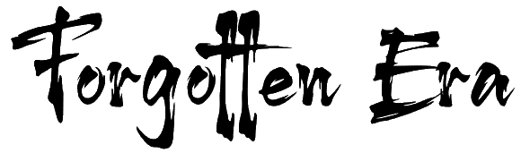
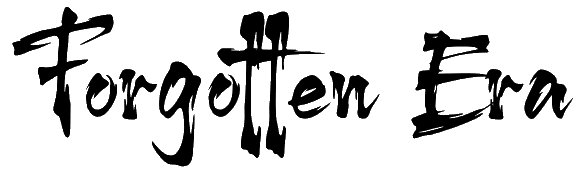

Although samurai no longer exist, the influence of these great warriors still manifests itself deeply in Japanese culture and samurai heritage can be seen all over Japan - be it a great castle, a carefully planned garden, or beautifully preserved samurai residences. It is also deeply ingrained in the psyche of the Japanese people.
From the thirteenth century, samurai conduct became heavily influenced by Zen Buddhism.
By being present in the moment, Zen training allowed a samurai to become one with their sword and the free and spontaneous mind gave them the mental edge over their enemy. Zen meditation calmed the mind and gave a warrior philosophical strength to deal with their inevitable death.
Zen complemented and influenced the way of the warrior and over four centuries Zen practices, such tea ceremony, monochrome ink painting, rock gardens, and poetry (haiku) introduced by monks were allowed to flourish thanks to these great warriors. Buddhist teachings had such an immense effect that as they became more ingrained in samurai life some samurai lost meaning in killing and gave up their sword for lives as monks.
 Photograph of samurai warriors from Satsuma province during the Boshin War.
Photograph of samurai warriors from Satsuma province during the Boshin War.
Synonymous with samurai bravery is the katana, or samurai sword, and bushido dictated that this curved, slender blade was the soul of a warrior. Images of samurai depict them with their masterfully crafted weapons of war and together with the shorter blade of a wakizashi, this pair, known as the daisho, represented the social status and personal honour of the samurai.
In the mid-1600s, Miyamoto Musashi, the highly revered and undefeated swordsman and samurai, wrote Go Rin Sho, or The Book of Five Rings. Widely published today, his teachings on military strategy and tactics draw heavily on Tibetan and Zen philosophy and he advocated the use of both the katana and the wakizashi simultaneously in battle.
During the Edo period the Tokugawa shogunate sought to achieve a unified Japan and towards the end of this relatively peaceful time the role of the samurai changed from that of warrior to courtier, bureaucrat and administrator, and with it the original use of the katana. Although they continued to carry their swords they were now more a symbol of power rather than a means of defence.
Not only master swordsmen, samurai were also proficient in using the yumi, or longbow. When the longbow ceased to be used as a weapon the art of kyujutsu, the skill of the bow, was adapted to a sporting activity. Yabusame, the practice of shooting from horseback, was introduced into Shinto ceremonies and this form of archery can still be enjoyed today in certain festivals throughout Japan.

There is nothing outside of yourself that can ever enable you to get better, stronger, richer, quicker, or smarter. Everything is within. Everything exists. Seek nothing outside of yourself
Not only were the samurai skilful warriors, but they were also expected to be highly cultured and literate; to be skilled in the harmony of fighting and learning. An ancient saying aspired to by warriors was bun bu ryo do: "the pen and sword in accord", and it was common for samurai to enjoy calligraphy, tea ceremony, poetry and music, and to study.
It was these highly aspired ideals of educated warriors that allowed for the cohesion of samurai armies and for their power to eventually dominate government. In 1160, the Taira clan beat the Minamoto clan and Taira no Kiyomori established the first samurai-lead government with the emperor losing control and being relegated to figurehead status.
Up until that time, throughout the Heian Period (794-1185), samurai had been employed to serve in close attendance with nobility, protecting the land of the wealthy: aided by political backing and resources the samurai had come into political power. Taira's control did not last long though as in 1192, at the start of the Kamakura Period (1192-1333), Minamoto Yorimoto received the title of shogun and gained rule of Japan.
Various bakufu or shogunate ruled over the centuries, each shaping the leadership of the country in their own way with the samurai continuously influencing the classes with their ideals of high literacy and education. Such was the influence of these elite warriors that during the Edo period (1603 - 1868) levels of literacy were higher than that of central Europe.